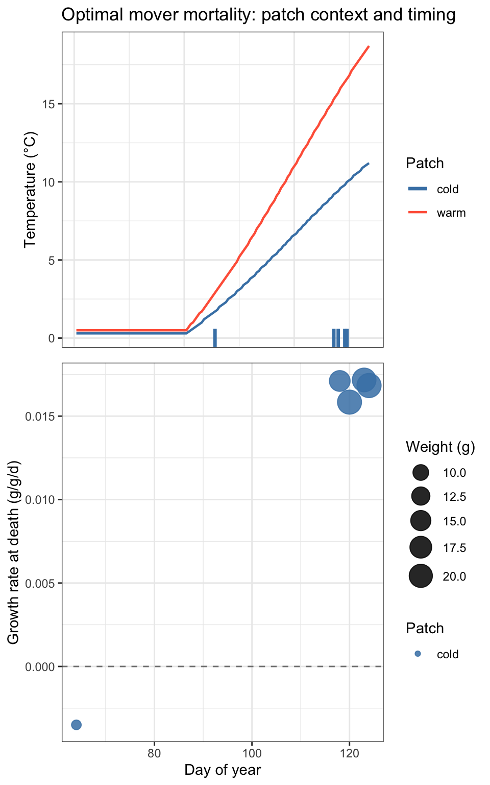

Code
load("data/wt.growth.array.RData")Purpose: construct an individual based model to simulate how fish move to track temperature-based growth opportunities across a habitat network, the resulting effects on growth, and the implications for long-term population dynamics.
Source dependencies
Load pre-calculated growth
load("data/wt.growth.array.RData")Configuration options
abiotic_only: fish can only sense temperature-dependent GP, regardless of which habitat is occupieddensity_current: fish sense density-dependent GP in current habitat, and compare to abiotic (temp-based) GP in the alternative habitatdensity_all: fish can sense density-dependent GP in all habitatsSenstive parameters:
Notes:
sense_environment == "density_all", the density used for the alternative patch is the current pre-movement density (i.e., what the fish can observe before anyone decides to move that day). This is the most tractable approximation — computing post-movement density would require solving a joint decision problem.move_threshold = Inf to formally unify all three strategies under one mechanism, rather than branching by strategy label — keeps the code cleaner if we expand to more strategies later.To do:
Three movement strategies are simulated: fish that remain year-round in the warm patch (resident_warm), fish that remain year-round in the cold patch (resident_cold), and fish that choose the better-growing patch each day (optimal_mover). Ration sizes match the unequal-ration scenario above.
Configuration notes:
Misc. objects
waterTemps <- cbind("pid" = seq(1, length(seq(0.1, 25, 0.1))),"WT" = seq(0.1, 25, 0.1))
rations <- seq(0.001, 0.4, 0.001)
weights <- seq(0.25, 1500, 0.25)Configure and initialize fish
# Configuration options:
move_stochastic <- "prob" # individual movement stochasticity: options = "none", "prob", "indiv"
food_densdepen <- "hyperbolic" # density dependence: options = "fullerton", "hyperbolic
sense_environment <- "density_current" # how omniscient are fish to temperature and density-dependent growth across the habitat patches?
# - "abiotic_only" = Omniscient to abiotic (temp-based) GP only...this is how it currently is.
# - "density_current" = Sense density dependent GP in current habitat, and compare to abiotic GP in the alternative habitat (perhaps the most biologically realistic)
# - "density_all" = Omniscient to density dependent GP in all habitats
# misc. parameters
n_fish_per_strat <- 50 # fish per strategy
start_wt <- 10 # initial weight (g)
MaxDensity4Growth <- 50 # growth is not depressed further above this density (currently this is arbitary)
movecost_c <- 0.025 # movement cost allometric function: `c` = scaling constant; `
movecost_b <- 0.6 # movement cost allometric function `a` = decay exponent (higher = steeper drop-off)
sigma_bold <- 0.002 # SD of boldness distribution, for dispersal propensity (g/g/d units)
tau <- 0.001 # sensitivity to growth difference (for probabilistic/softmax variation in movement)
K_warm <- K_cold <- 500 # For hyperbolic reduction, strength of density dependence/half-saturation density: fish density at which ration is halved
# Fullerton has movement cost coded slightly differently, where movement cost is a function of the instantaneous growth rate, distance moved, and a constant...rather than simply a fixed cost as is the case here. But because we only have two patches that are spatially implicit, we can ignore this more complex parameterization...at least for now.
# ration_warm = 0.10, ration_cold = 0.07 (defined in "Unequal ration" section above)
# Lookup sequences — identical to the axes of the wt.growth array
wt_seq_ibm <- waterTemps[, "WT"] # seq(0.1, 25, 0.1), 250 values
ra_seq_ibm <- rations # seq(0.001, 0.4, 0.001), 151 values
# set.seed(7843)
# initialize fish
fish_pop <- bind_rows(
tibble(strategy = "resident_warm", patch = "warm",
weight = pmax(1, rnorm(n_fish_per_strat, start_wt, 2))),
tibble(strategy = "resident_cold", patch = "cold",
weight = pmax(1, rnorm(n_fish_per_strat, start_wt, 2))),
tibble(strategy = "optimal_mover", patch = "warm",
weight = pmax(1, rnorm(n_fish_per_strat, start_wt, 2)))) %>%
mutate(pid = row_number(),
# ration = if_else(patch == "warm", ration_warm, ration_cold),
# Rations are calculated in the loop as functions of temperature and body size
cmax_allometric = NA,
pcmax_baseline = NA,
pcmax_adjusted = NA,
pcmax_adjusted_dd = NA,
func_temp = NA,
ration = NA,
# Individual movement threshold — drawn once, fixed for life
# Positive = reluctant to move (needs a clear advantage)
# Negative = bold/prone to move (moves even when slightly disadvantaged)
move_threshold = c(rep(Inf, n_fish_per_strat*2), # residents never move
rnorm(n_fish_per_strat, mean = 0, sd = sigma_bold)),
prob_surv = 1, survive = 1) %>%
group_by(patch) %>% mutate(density = n()) %>% ungroup()
fish_pop# A tibble: 150 × 14
strategy patch weight pid cmax_allometric pcmax_baseline pcmax_adjusted
<chr> <chr> <dbl> <int> <lgl> <lgl> <lgl>
1 resident_wa… warm 8.89 1 NA NA NA
2 resident_wa… warm 8.32 2 NA NA NA
3 resident_wa… warm 5.48 3 NA NA NA
4 resident_wa… warm 10.3 4 NA NA NA
5 resident_wa… warm 13.1 5 NA NA NA
6 resident_wa… warm 11.6 6 NA NA NA
7 resident_wa… warm 9.24 7 NA NA NA
8 resident_wa… warm 14.8 8 NA NA NA
9 resident_wa… warm 7.07 9 NA NA NA
10 resident_wa… warm 10.4 10 NA NA NA
# ℹ 140 more rows
# ℹ 7 more variables: pcmax_adjusted_dd <lgl>, func_temp <lgl>, ration <lgl>,
# move_threshold <dbl>, prob_surv <dbl>, survive <dbl>, density <int>For each day of year, optimal movers compare the bioenergetics growth rate at both patches — the vectorised equivalent of calling fncGrowthPossible() for each fish — and switch only when the movement-cost-penalised gain in the alternative patch exceeds staying (but this may differ among individuals depending on how movement stochasticity is configured). Warm and cold patch residents stay in their pre-defined patch. fncGrowthFish() then looks up the actual growth rate for every fish at their current patch, weight, and ration, and weights are updated accordingly.
n_days <- nrow(habitat_df) # number of days in the simulation
n_fish <- nrow(fish_pop) # number of fish in the simulation
fish_pop_init <- fish_pop # snapshot of full population before any mortality
# Pre-allocate storage (rows = fish pid, columns = days)
# Rows are indexed by fish pid (1:n_fish), which is stable even as fish die.
# Dead fish slots remain NA for all days after death.
ggd_matrix <- matrix(NA_real_, nrow = n_fish, ncol = n_days) # standardized growth rates experienced
gd_matrix <- matrix(NA_real_, nrow = n_fish, ncol = n_days) # absolute growth rates
temp_matrix <- matrix(NA_real_, nrow = n_fish, ncol = n_days) # water temps experienced
patch_matrix <- matrix(NA_character_, nrow = n_fish, ncol = n_days) # patch occupied
mass_matrix <- matrix(NA_real_, nrow = n_fish, ncol = n_days) # weight/mass trajectories
surv_matrix <- matrix(NA_integer_, nrow = n_fish, ncol = n_days) # survived (1) or died (0) each day
pcmax_base_matrix <- matrix(NA_integer_, nrow = n_fish, ncol = n_days) # baseline P_Cmax threshold
pcmax_adj_matrix <- matrix(NA_integer_, nrow = n_fish, ncol = n_days) # P_Cmax adjusted for temperature dependence
pcmax_adjdd_matrix <- matrix(NA_integer_, nrow = n_fish, ncol = n_days) # P_Cmax adjusted for tempderature and density dependence
func_temp_matrix <- matrix(NA_integer_, nrow = n_fish, ncol = n_days) # Temperature dependence function
ration_matrix <- matrix(NA_integer_, nrow = n_fish, ncol = n_days) # ration size/consumption in g/d/d
switches <- integer(n_fish) # count patch switches per fish (indexed by pid)
for (d in 1:n_days) {
t <- habitat_df$doy[d] # day of year
# 1. GET/FIND PATCH TEMPERATURE AND RATION -----------------------------------------------------
# Temperature indices for this day — shared by all fish
T_warm <- get_patchtemp(t, "warm") # get warm patch temp on day t
T_cold <- get_patchtemp(t, "cold") # get cold patch temp on day t
wt_idx_warm <- which.min(abs(wt_seq_ibm - T_warm)) # water temp index for warm patch on day t
wt_idx_cold <- which.min(abs(wt_seq_ibm - T_cold)) # water temp index for cold patch on day t
# Ration indices for this day - shared by all fish
# R_warm <- get_patchration(t, "warm")
# R_cold <- get_patchration(t, "cold")
# ra_idx_warm <- which.min(abs(ra_seq_ibm - R_warm)) # ration index for warm patch on day t
# ra_idx_cold <- which.min(abs(ra_seq_ibm - R_cold)) # ration index for cold patch on day t
# Calculate habitat, temperature, and body size dependent rations following convo. with Jonny
fish_pop <- fish_pop %>%
mutate(func_temp = ifelse(patch == "warm", fncTempDepend(T_warm), fncTempDepend(T_cold)),
pcmax_baseline = ifelse(patch == "warm", get_patchpcmax(t, "warm"), get_patchpcmax(t, "cold")),
pcmax_adjusted = ifelse(func_temp < pcmax_baseline, func_temp, pcmax_baseline),
cmax_allometric = fncAllomCmax(weight)
# ration = cmax_allometric * pcmax_adjusted
)
# 2. CHOOSE PATCH: OPTIMAL MOVERS ---------------------------------------------------------------
# Mirrors fncGrowthPossible() logic, vectorized across all movers at once.
# Patch choice senses baseline temperature and ration, but not density
mover_rows <- which(fish_pop$strategy == "optimal_mover") # get row indices for optimal movers
if (length(mover_rows) > 0) {
# Mass indices for each mover (clamped to array bounds)
ma_idx_vec <- pmax(1L, pmin(4500L, round(fish_pop$weight[mover_rows]))) # get row index for current mass
## 2.A.
in_warm <- fish_pop$patch[mover_rows] == "warm" # is the fish in warm patch? T/F
move_cost_vec <- fncMoveCost_allometric(fish_pop$weight[mover_rows], c = movecost_c, b = movecost_b) # calculate size-dependent cost of movement
# Pre-compute each mover's hypothetical ration in BOTH patches for patch choice sensing.
# This initial step is done without accounting for the effect of density on p_cmax/ration
# pcmax scalars are day-level constants; cmax_allometric is already in fish_pop from step 1.
pcmax_warm_adj <- min(fncTempDepend(T_warm), get_patchpcmax(t, "warm"))
pcmax_cold_adj <- min(fncTempDepend(T_cold), get_patchpcmax(t, "cold"))
ra_warm_vec <- fish_pop$cmax_allometric[mover_rows] * pcmax_warm_adj
ra_cold_vec <- fish_pop$cmax_allometric[mover_rows] * pcmax_cold_adj
ra_idx_warm_vec <- pmax(1L, pmin(400L, map_int(ra_warm_vec, ~which.min(abs(ra_seq_ibm - .x)))))
ra_idx_cold_vec <- pmax(1L, pmin(400L, map_int(ra_cold_vec, ~which.min(abs(ra_seq_ibm - .x)))))
if (sense_environment == "abiotic_only") {
### 2.A.1. Individuals sense only temperature-based growth potential across all habitats
g_warm_vec <- wt.growth[cbind(wt_idx_warm, ra_idx_warm_vec, ma_idx_vec)]
g_cold_vec <- wt.growth[cbind(wt_idx_cold, ra_idx_cold_vec, ma_idx_vec)]
g_stay <- ifelse(in_warm, g_warm_vec, g_cold_vec) # growth if staying in current patch
g_move_net <- ifelse(in_warm, g_cold_vec - move_cost_vec, g_warm_vec - move_cost_vec) # growth if moving to alternate patch
} else if (sense_environment == "density_current") {
### 2.A.2. Individuals sense density-dependent GP in current habitat, abiotic GP in alternative habitat
# Density-adjusted individual rations for each patch (hyperbolic: Cmax * P_cmax * (K / (K + N)))
# Adjust P_Cmax by density to effects of body size on the density penalty
n_warm <- sum(fish_pop$patch == "warm")
n_cold <- sum(fish_pop$patch == "cold")
ra_warm_dd_vec <- fish_pop$cmax_allometric[mover_rows] * pcmax_warm_adj * (K_warm / (K_warm + n_warm - 1))
ra_cold_dd_vec <- fish_pop$cmax_allometric[mover_rows] * pcmax_cold_adj * (K_cold / (K_warm + n_cold - 1))
ra_idx_warm_dd_vec <- pmax(1L, pmin(400L, map_int(ra_warm_dd_vec, ~which.min(abs(ra_seq_ibm - .x)))))
ra_idx_cold_dd_vec <- pmax(1L, pmin(400L, map_int(ra_cold_dd_vec, ~which.min(abs(ra_seq_ibm - .x)))))
# Warm fish sense dd-adjusted warm / abiotic cold; cold fish sense abiotic warm / dd-adjusted cold
g_warm_vec <- wt.growth[cbind(wt_idx_warm, ifelse(in_warm, ra_idx_warm_dd_vec, ra_idx_warm_vec), ma_idx_vec)]
g_cold_vec <- wt.growth[cbind(wt_idx_cold, ifelse(in_warm, ra_idx_cold_vec, ra_idx_cold_dd_vec), ma_idx_vec)]
g_stay <- ifelse(in_warm, g_warm_vec, g_cold_vec)
g_move_net <- ifelse(in_warm, g_cold_vec - move_cost_vec, g_warm_vec - move_cost_vec)
} else if (sense_environment == "density_all") {
### 2.A.3. Individuals sense density-dependent GP across all habitats
# Density-adjusted individual rations for each patch (hyperbolic: Cmax * P_cmax * (K / (K + N)))
# Adjust P_Cmax by density to effects of body size on the density penalty
n_warm <- sum(fish_pop$patch == "warm")
n_cold <- sum(fish_pop$patch == "cold")
ra_warm_dd_vec <- fish_pop$cmax_allometric[mover_rows] * pcmax_warm_adj * (K_warm / (K_warm + n_warm - 1))
ra_cold_dd_vec <- fish_pop$cmax_allometric[mover_rows] * pcmax_cold_adj * (K_cold / (K_warm + n_cold - 1))
ra_idx_warm_dd_vec <- pmax(1L, pmin(400L, map_int(ra_warm_dd_vec, ~which.min(abs(ra_seq_ibm - .x)))))
ra_idx_cold_dd_vec <- pmax(1L, pmin(400L, map_int(ra_cold_dd_vec, ~which.min(abs(ra_seq_ibm - .x)))))
# Both patches sensed with density-adjusted individual rations
g_warm_vec <- wt.growth[cbind(wt_idx_warm, ra_idx_warm_dd_vec, ma_idx_vec)]
g_cold_vec <- wt.growth[cbind(wt_idx_cold, ra_idx_cold_dd_vec, ma_idx_vec)]
g_stay <- ifelse(in_warm, g_warm_vec, g_cold_vec)
g_move_net <- ifelse(in_warm, g_cold_vec - move_cost_vec, g_warm_vec - move_cost_vec)
}
prev_patch <- fish_pop$patch[mover_rows]
## 2.B. Impose stochasticity in movement
if (move_stochastic == "none") {
### 2.B.1. Deterministic: All movers do the same thing
# Update patch based on whether moving is beneficial.
# 1. If fish in is warm patch and growth potential of moving exceeds growth potential of staying, move to cold.
# 2. If fish in is cold patch and growth potential of moving exceeds growth potential of staying, move to warm.
fish_pop$patch[mover_rows] <- case_when(
in_warm & g_move_net > g_stay ~ "cold",
!in_warm & g_move_net > g_stay ~ "warm",
TRUE ~ fish_pop$patch[mover_rows]
)
} else if (move_stochastic == "prob") {
### 2.B.2. Probabilistic (softmax) rule: Instead of a hard threshold, fish switch with a probability that increases with the growth advantage. One parameter: τ (sensitivity; small = nearly deterministic, large = nearly random).
p_warm <- fncMoveSoftmax(gwarm = g_warm_vec, gcold = g_cold_vec, tau = 0.001) # calculate probability of selecting warm habitat
choose_warm <- runif(length(mover_rows)) < p_warm # choose warm if p_warm exceeds a random number between 0 and 1
fish_pop$patch[mover_rows] <- if_else(choose_warm, "warm", "cold") # update patch
} else if (move_stochastic == "indiv") {
### 2.B.3. Individual-level movement threshold: each fish has a unique threshold for movement, representing individual variation in boldness/dispersal propensity
fish_pop$patch[mover_rows] <- case_when(
in_warm & (g_move_net - g_stay) > fish_pop$move_threshold[mover_rows] ~ "cold",
!in_warm & (g_move_net - g_stay) > fish_pop$move_threshold[mover_rows] ~ "warm",
TRUE ~ prev_patch) #fish_pop$patch[mover_rows])
}
# Tally switches (indexed by pid so counts remain correct as fish die)
switched <- fish_pop$patch[mover_rows] != prev_patch
switches[fish_pop$pid[mover_rows]] <- switches[fish_pop$pid[mover_rows]] + as.integer(switched)
} # end patch choice
# Recompute func_temp and pcmax_adjusted based on post-choice patch.
# Required because some fish may have switched patches during step 2;
# step 1 values reflect the pre-choice patch and would be stale for switchers.
fish_pop <- fish_pop %>%
mutate(
func_temp = ifelse(patch == "warm", fncTempDepend(T_warm), fncTempDepend(T_cold)),
pcmax_baseline = ifelse(patch == "warm", get_patchpcmax(t, "warm"), get_patchpcmax(t, "cold")),
pcmax_adjusted = ifelse(func_temp < pcmax_baseline, func_temp, pcmax_baseline)
)
# 3. UPDATE HABITAT QUALITY (DENSITY-DEPENDENT RATION) -----------------------------------------
# Update density after fish have moved
fish_pop <- fish_pop %>% group_by(patch) %>% mutate(density = n()) %>% ungroup()
if (food_densdepen == "fullerton") {
### 3a. Fullerton approach
# get density effect on ration
fdens <- fdens_raw <- fish_pop$density # get fish "density" per patch (here, simply abundance b/c space is not specified)
fdens[fdens > MaxDensity4Growth] <- MaxDensity4Growth # high densities cap out at MaxDensity4Growth
density.effect <- fncRescale((1 - c(fdens, 0.01, MaxDensity4Growth)), c((0.5),1)) # calculate density effect scalar
density.effect <- density.effect[-c(length(density.effect), (length(density.effect) - 1))] # remove the last 2 temporary values
# update ration in patches to account for density dependence in food availability
fish_pop <- fish_pop %>% mutate(ration = ration * density.effect)
} else if (food_densdepen == "hyperbolic") {
### 3b. Hyperbolic reduction approach — scale each fish's individual P_Cmax by density, then calculate ration as C_max * P_Cmax
fish_pop <- fish_pop %>%
mutate(
k = if_else(patch == "warm", K_warm, K_cold),
pcmax_adjusted_dd = pcmax_adjusted * (K_warm / (K_warm + n_warm - 1)),
ration = cmax_allometric * pcmax_adjusted_dd
) %>%
select(-k)
}
# 4. GROW FISH (WISCONSIN BIOENERGETICS) -------------------------------------------------------
# Growth lookup for all fish via fncGrowthFish. Growth in g/g/d
growth_df <- fncGrowthFish(NA, as.data.frame(fish_pop), t)
# Store experienced rates before weight update.
# All indexing uses fish pid (rows 1:n_fish) so slots remain stable as fish die.
temp_matrix[fish_pop$pid, d] <- growth_df$WT.actual
ggd_matrix[fish_pop$pid, d] <- growth_df$growth # growth in g/g/d
gd_matrix[fish_pop$pid, d] <- growth_df$growth * fish_pop$weight # growth in g/d
# Update weight: W_{t+1} = W_t + (growth_rate * W_t)
fish_pop$weight <- fish_pop$weight + (growth_df$growth * fish_pop$weight)
# 5. SURVIVAL BASED ON FISH WEIGHT AND GROWTH --------------------------------------------------
# Weight and growth dependent
surv.list <- fncSurvive(growth_df)
growth_df <- growth_df %>%
mutate(prob_surv = surv.list[[1]],
survive = surv.list[[2]])
# Weight dependent only --- the issue with this is that basically nobody dies. See GrowthScapes working notes in OneNote
# surv.list <- fncSurviveSimp(growth_df)
# growth_df <- growth_df %>%
# mutate(prob_surv = surv.list[[1]],
# survive = surv.list[[2]])
# 6. STORE RESULTS AND REMOVE NON-SURVIVORS ----------------------------------------------------
# Primary: Store updated weight, patch, and survival outcome for this day
mass_matrix[fish_pop$pid, d] <- fish_pop$weight
patch_matrix[fish_pop$pid, d] <- fish_pop$patch
surv_matrix[fish_pop$pid, d] <- growth_df$survive
# Secondary: store bioenergetics inputs
pcmax_base_matrix[fish_pop$pid, d] <- fish_pop$pcmax_baseline
pcmax_adj_matrix[fish_pop$pid, d] <- fish_pop$pcmax_adjusted
pcmax_adjdd_matrix[fish_pop$pid, d] <- fish_pop$pcmax_adjusted_dd
func_temp_matrix[fish_pop$pid, d] <- fish_pop$func_temp
ration_matrix[fish_pop$pid, d] <- fish_pop$ration
# Remove non-survivors — only living fish carry forward to next iteration
fish_pop <- fish_pop[growth_df$survive == 1, ]
}Collate results into long tibbles and summarized tibbles
# assign DOY column names
colnames(mass_matrix) <- as.character(habitat_df$doy)
colnames(patch_matrix) <- as.character(habitat_df$doy)
colnames(temp_matrix) <- as.character(habitat_df$doy)
colnames(ggd_matrix) <- as.character(habitat_df$doy)
colnames(surv_matrix) <- as.character(habitat_df$doy)
colnames(pcmax_base_matrix) <- as.character(habitat_df$doy)
colnames(pcmax_adj_matrix) <- as.character(habitat_df$doy)
colnames(pcmax_adjdd_matrix) <- as.character(habitat_df$doy)
colnames(func_temp_matrix) <- as.character(habitat_df$doy)
colnames(ration_matrix) <- as.character(habitat_df$doy)
# Convert weight matrix to long format, join with patch matrix
# Use fish_pop_init to label rows — fish_pop at this point only contains survivors
mass_long <- as_tibble(mass_matrix) %>%
bind_cols(fish_pop_init %>% select(pid, strategy)) %>%
pivot_longer(-c(pid, strategy), names_to = "doy", values_to = "weight") %>%
mutate(doy = as.integer(doy)) %>%
left_join(
as_tibble(patch_matrix) %>%
bind_cols(fish_pop_init %>% select(pid)) %>%
pivot_longer(-pid, names_to = "doy", values_to = "patch") %>%
mutate(doy = as.integer(doy)),
by = c("pid", "doy")
) %>%
left_join(habitat_df %>% select(doy, date), by = "doy")
# Convert temp matrix to long format
temp_long <- as_tibble(temp_matrix) %>%
bind_cols(fish_pop_init %>% select(pid, strategy)) %>%
pivot_longer(-c(pid, strategy), names_to = "doy", values_to = "temp") %>%
mutate(doy = as.integer(doy)) %>%
left_join(habitat_df %>% select(doy, date), by = "doy")
# convert standardized growth rate matrix to long format
ggd_long <- as_tibble(ggd_matrix) %>%
bind_cols(fish_pop_init %>% select(pid, strategy)) %>%
pivot_longer(-c(pid, strategy), names_to = "doy", values_to = "ggd") %>%
mutate(doy = as.integer(doy)) %>%
left_join(habitat_df %>% select(doy, date), by = "doy")
# convert survival matrix to long format (1 = survived, 0 = died, NA = already dead)
surv_long <- as_tibble(surv_matrix) %>%
bind_cols(fish_pop_init %>% select(pid, strategy)) %>%
pivot_longer(-c(pid, strategy), names_to = "doy", values_to = "survived") %>%
mutate(doy = as.integer(doy)) %>%
left_join(habitat_df %>% select(doy, date), by = "doy")
# convert baseline P_Cmax matrix to long format
pcmax_base_long <- as_tibble(pcmax_base_matrix) %>%
bind_cols(fish_pop_init %>% select(pid, strategy)) %>%
pivot_longer(-c(pid, strategy), names_to = "doy", values_to = "pcmax_base") %>%
mutate(doy = as.integer(doy)) %>%
left_join(habitat_df %>% select(doy, date), by = "doy")
# convert temp-adjusted P_Cmax matrix to long format
pcmax_adj_long <- as_tibble(pcmax_adj_matrix) %>%
bind_cols(fish_pop_init %>% select(pid, strategy)) %>%
pivot_longer(-c(pid, strategy), names_to = "doy", values_to = "pcmax_adj") %>%
mutate(doy = as.integer(doy)) %>%
left_join(habitat_df %>% select(doy, date), by = "doy")
# convert temp and density adjusted matrix to long format
pcmax_adjdd_long <- as_tibble(pcmax_adjdd_matrix) %>%
bind_cols(fish_pop_init %>% select(pid, strategy)) %>%
pivot_longer(-c(pid, strategy), names_to = "doy", values_to = "pcmax_adjdd") %>%
mutate(doy = as.integer(doy)) %>%
left_join(habitat_df %>% select(doy, date), by = "doy")
# convert survival matrix to long format (1 = survived, 0 = died, NA = already dead)
func_temp_long <- as_tibble(func_temp_matrix) %>%
bind_cols(fish_pop_init %>% select(pid, strategy)) %>%
pivot_longer(-c(pid, strategy), names_to = "doy", values_to = "func_temp") %>%
mutate(doy = as.integer(doy)) %>%
left_join(habitat_df %>% select(doy, date), by = "doy")
# convert survival matrix to long format (1 = survived, 0 = died, NA = already dead)
ration_long <- as_tibble(ration_matrix) %>%
bind_cols(fish_pop_init %>% select(pid, strategy)) %>%
pivot_longer(-c(pid, strategy), names_to = "doy", values_to = "ration") %>%
mutate(doy = as.integer(doy)) %>%
left_join(habitat_df %>% select(doy, date), by = "doy")
# bind all individual data
ibm_long <- mass_long %>%
left_join(temp_long %>% select(-date), by = c("pid", "strategy", "doy")) %>%
left_join(ggd_long %>% select(-date), by = c("pid", "strategy", "doy")) %>%
left_join(surv_long %>% select(-date), by = c("pid", "strategy", "doy")) %>%
left_join(pcmax_base_long %>% select(-date), by = c("pid", "strategy", "doy")) %>%
left_join(pcmax_adj_long %>% select(-date), by = c("pid", "strategy", "doy")) %>%
left_join(pcmax_adjdd_long %>% select(-date), by = c("pid", "strategy", "doy")) %>%
left_join(func_temp_long %>% select(-date), by = c("pid", "strategy", "doy")) %>%
left_join(ration_long %>% select(-date), by = c("pid", "strategy", "doy"))
# summarize by strategy
ibm_summary <- ibm_long %>%
group_by(strategy, doy, date) %>%
summarise(
mean_weight = mean(weight, na.rm = TRUE),
sd_weight = sd(weight, na.rm = TRUE),
mean_temp = mean(temp, na.rm = TRUE),
sd_temp = sd(temp, na.rm = TRUE),
mean_ggd = mean(ggd, na.rm = TRUE),
sd_ggd = sd(ggd, na.rm = TRUE),
prop_warm = mean(patch == "warm", na.rm = TRUE),
n_alive = sum(survived, na.rm = TRUE),
mean_pcmax_bas = mean(pcmax_base, na.rm = TRUE),
sd_pcmax_base = sd(pcmax_base, na.rm = TRUE),
mean_pcmax_adj = mean(pcmax_adj, na.rm = TRUE),
sd_pcmax_adj = sd(pcmax_adj, na.rm = TRUE),
mean_pcmax_adjdd = mean(pcmax_adjdd, na.rm = TRUE),
sd_pcmax_adjdd = sd(pcmax_adjdd, na.rm = TRUE),
mean_func_temp = mean(func_temp, na.rm = TRUE),
sd_func_temp = sd(func_temp, na.rm = TRUE),
mean_ration = mean(ration, na.rm = TRUE),
sd_ration = sd(ration, na.rm = TRUE),
.groups = "drop"
)
ibm_summary# A tibble: 1,098 × 21
strategy doy date mean_weight sd_weight mean_temp sd_temp mean_ggd
<chr> <int> <date> <dbl> <dbl> <dbl> <dbl> <dbl>
1 optimal_mo… 1 2024-01-01 10.1 1.96 0.376 0.0981 -0.00412
2 optimal_mo… 2 2024-01-02 10.1 1.95 0.416 0.0997 -0.00405
3 optimal_mo… 3 2024-01-03 10.1 1.94 0.392 0.101 -0.00408
4 optimal_mo… 4 2024-01-04 10.0 1.94 0.4 0.101 -0.00407
5 optimal_mo… 5 2024-01-05 9.97 1.93 0.424 0.0981 -0.00407
6 optimal_mo… 6 2024-01-06 9.93 1.92 0.4 0.101 -0.00409
7 optimal_mo… 7 2024-01-07 9.89 1.92 0.408 0.101 -0.00408
8 optimal_mo… 8 2024-01-08 9.85 1.91 0.408 0.101 -0.00409
9 optimal_mo… 9 2024-01-09 9.81 1.90 0.388 0.100 -0.00410
10 optimal_mo… 10 2024-01-10 9.77 1.90 0.396 0.101 -0.00409
# ℹ 1,088 more rows
# ℹ 13 more variables: sd_ggd <dbl>, prop_warm <dbl>, n_alive <int>,
# mean_pcmax_bas <dbl>, sd_pcmax_base <dbl>, mean_pcmax_adj <dbl>,
# sd_pcmax_adj <dbl>, mean_pcmax_adjdd <dbl>, sd_pcmax_adjdd <dbl>,
# mean_func_temp <dbl>, sd_func_temp <dbl>, mean_ration <dbl>,
# sd_ration <dbl>Ration size by weight: points should generally track allometric scaling of Cmax (halved to account for baseline/treshold P_Cmax, dashed line). Noise is due to variation in temperature and density. This looks fine…points fall away from 0.5xC_max during very cold periods when temperature restricts physiological capacity. The three separate “cliffs” show that you get the same behavior at the end of the year when temps are limited but fish have attained different mean body sizes depending on their life-history strategy
constants <- fncReadConstants()
xs <- seq(from = min(ibm_long$weight, na.rm = TRUE), to = max(ibm_long$weight, na.rm = TRUE), length.out = 100)
ys <- constants$Consumption$CA * (xs ^ constants$Consumption$CB)
p1 <- ggplot() +
geom_point(data = ibm_long %>% filter(survived == 1) %>% group_by(doy, patch) %>% mutate(density = n()) %>% ungroup(),
aes(x = weight, y = ration, color = strategy)) +
# geom_line(aes(x = xs, y = ys), linetype = "dashed", color = "grey40") +
geom_line(aes(x = xs, y = ys*0.5), linetype = "dashed", color = "black") +
theme_bw() + theme(legend.position = "top") +
ylab("Ration size (g/g/d)") + xlab("Fish mass (g)")
p2 <- ggplot() +
geom_point(data = ibm_long %>% filter(survived == 1) %>% group_by(doy, patch) %>% mutate(density = n()) %>% ungroup(),
aes(x = weight, y = ration, color = temp)) +
# geom_line(aes(x = xs, y = ys), linetype = "dashed", color = "grey40") +
geom_line(aes(x = xs, y = ys*0.5), linetype = "dashed", color = "black") +
theme_bw() + theme(legend.position = "top") +
ylab("Ration size (g/g/d)") + xlab("Fish mass (g)")
egg::ggarrange(p2, p1, nrow = 1)
f(T) should perfectly track the temperature dependence function b/c it is only based on temperature and constants that are common to all individuals
ggplot() +
geom_point(data = ibm_long %>% filter(survived == 1), aes(x = temp, y = func_temp, color = weight)) +
# geom_line(aes(x = xs, y = ys), linetype = "dashed", color = "grey40") +
# geom_line(aes(x = xs, y = ys*0.5), linetype = "dashed", color = "red") +
theme_bw() +
ylab("f(Temperature)") + xlab("Temperature (deg. C)")
P_Cmax by temp: points should perfect track the temperature dependence function, but max out at the threshold P_Cmax set in each habitat.
ggplot() +
geom_point(data = ibm_long %>% filter(survived == 1), aes(x = temp, y = pcmax_adj, color = weight)) +
geom_abline(slope = 0, intercept = 0.5, color = "grey40", linetype = "dashed") +
# geom_line(aes(x = xs, y = ys), linetype = "dashed", color = "grey40") +
# geom_line(aes(x = xs, y = ys*0.5), linetype = "dashed", color = "red") +
theme_bw() +
ylab("Temperature adjusted P_Cmax") + xlab("Temperature (deg. C)")
Now show P_cmax adjusted by both temperature and density: points should generally track temperature-dependence function, capped at baseline/threshold P_Cmax. Noise is due to variation in body size and density. Smaller fish feeding at higher densities typically experience more food limitation…this appears to occur more commonly in the warm habitat during late spring.
p1 <- ggplot() +
geom_point(data = ibm_long %>% filter(survived == 1) %>% group_by(doy, patch) %>% mutate(density = n()) %>% ungroup(),
aes(x = temp, y = pcmax_adjdd, color = weight)) +
geom_abline(slope = 0, intercept = 0.5, color = "grey40", linetype = "dashed") +
# geom_line(aes(x = xs, y = ys), linetype = "dashed", color = "grey40") +
# geom_line(aes(x = xs, y = ys*0.5), linetype = "dashed", color = "red") +
theme_bw() + ylim(0.07, 0.5) + theme(legend.position = "top") +
ylab("Temperature and density adjusted P_Cmax") + xlab("Temperature (deg. C)")
p2 <- ggplot() +
geom_point(data = ibm_long %>% filter(survived == 1) %>% group_by(doy, patch) %>% mutate(density = n()) %>% ungroup(),
aes(x = temp, y = pcmax_adjdd, color = density)) +
geom_abline(slope = 0, intercept = 0.5, color = "grey40", linetype = "dashed") +
# geom_line(aes(x = xs, y = ys), linetype = "dashed", color = "grey40") +
# geom_line(aes(x = xs, y = ys*0.5), linetype = "dashed", color = "red") +
theme_bw() + ylim(0.07, 0.5) + theme(legend.position = "top") +
ylab("Temperature and density adjusted P_Cmax") + xlab("Temperature (deg. C)")
p3 <- ggplot() +
geom_point(data = ibm_long %>% filter(survived == 1) %>% group_by(doy, patch) %>% mutate(density = n()) %>% ungroup(),
aes(x = temp, y = pcmax_adjdd, color = patch)) +
geom_abline(slope = 0, intercept = 0.5, color = "grey40", linetype = "dashed") +
# geom_line(aes(x = xs, y = ys), linetype = "dashed", color = "grey40") +
# geom_line(aes(x = xs, y = ys*0.5), linetype = "dashed", color = "red") +
theme_bw() + ylim(0.07, 0.5) + theme(legend.position = "top") +
ylab("Temperature and density adjusted P_Cmax") + xlab("Temperature (deg. C)")
p4 <- ggplot() +
geom_point(data = ibm_long %>% filter(survived == 1) %>% group_by(doy, patch) %>% mutate(density = n()) %>% ungroup(),
aes(x = temp, y = pcmax_adjdd, color = doy)) +
geom_abline(slope = 0, intercept = 0.5, color = "grey40", linetype = "dashed") +
# geom_line(aes(x = xs, y = ys), linetype = "dashed", color = "grey40") +
# geom_line(aes(x = xs, y = ys*0.5), linetype = "dashed", color = "red") +
theme_bw() + ylim(0.07, 0.5) + theme(legend.position = "top") +
ylab("Temperature and density adjusted P_Cmax") + xlab("Temperature (deg. C)")
egg::ggarrange(p1, p2, p3, p4, nrow = 2, ncol = 2)
weight trajectories by strategy (ribbon = ±1 SD across individuals).
Uncertainty derives from variation in starting size (if allowed) and stochasticity in individual movement behavior (if configured).
p1 <- ibm_summary %>%
ggplot(aes(x = date, color = strategy, fill = strategy)) +
geom_ribbon(aes(ymin = mean_weight - sd_weight, ymax = mean_weight + sd_weight),
alpha = 0.15, color = NA) +
geom_line(aes(y = mean_weight)) +
scale_color_manual(values = c(resident_warm = "red",
resident_cold = "blue",
optimal_mover = "darkgreen")) +
scale_fill_manual(values = c(resident_warm = "red",
resident_cold = "blue",
optimal_mover = "darkgreen")) +
theme_bw() + #ylim(0,10000) +
xlab("Date") + ylab("Mean weight ± SD (g)")
p2 <- mass_long %>%
ggplot(aes(x = date, y = weight, color = strategy, group = pid)) +
geom_line(alpha = 0.5) +
scale_color_manual(values = c(resident_warm = "red",
resident_cold = "blue",
optimal_mover = "darkgreen")) +
theme_bw() + #ylim(0,10000) +
xlab("Date") + ylab("Individual weight (g)")
ggpubr::ggarrange(p1, p2, nrow = 1, common.legend = TRUE)
Plot daily counts of survivors and overall survival by strategy (plots are the same, survival is standardized by number of initial fish per strategy)
p1 <- ibm_summary %>%
ggplot(aes(x = date, y = n_alive, color = strategy)) +
geom_line() +
scale_color_manual(values = c(resident_warm = "red",
resident_cold = "blue",
optimal_mover = "darkgreen")) +
scale_y_continuous(limits = c(0, NA)) +
labs(
x = "Date",
y = "Number alive",
color = "Strategy",
title = "Population size by strategy"
) +
theme_bw()
p2 <- ibm_summary %>%
ggplot(aes(x = date, y = n_alive / n_fish_per_strat, color = strategy)) +
geom_line() +
scale_color_manual(values = c(resident_warm = "red",
resident_cold = "blue",
optimal_mover = "darkgreen")) +
scale_y_continuous(limits = c(0, NA)) +
labs(
x = "Date",
y = "Proportion alive",
color = "Strategy",
title = "Cumulative survival by strategy"
) +
theme_bw()
ggpubr::ggarrange(p1, p2, common.legend = TRUE)
Summarize survival outcomes by strategy:
ibm_summary %>%
filter(doy == n_days) %>%
mutate(survive_rate = n_alive / n_fish_per_strat) %>%
select(strategy, n_alive, survive_rate)# A tibble: 3 × 3
strategy n_alive survive_rate
<chr> <int> <dbl>
1 optimal_mover 45 0.9
2 resident_cold 27 0.54
3 resident_warm 13 0.26Interpretation below is based on past model runs with different parameterization/configuration. But what is consistent across runs is that (1) summer is a challenging time for survival in the warm habitat, (2) winter/spring is challenges survival in the cold habitat, and (3) movers always have the highest survival.
sense_environment appears to have a large effect on survival outcomes, but doesn’t change overall patterns described above.
resident_warm has the lowest overall survival, consistent with it being the poorest-growing strategy.
resident_warm mortality coincides with slower/negative growth in mid-summer, which is exactly what the function should be responding to.resident_cold has moderate overall survival. Survival declines the early part of the year when growth is negative and fish are small. Very little mortality occurs during the summer, consistent with theory on the role of perennially cold habitat providing summer refugia. By the end of the year, most fish have escaped the survival bottleneck associated with small body sizeoptimal_mover has the highest overall survival (~96%), reflecting its growth advantage keeping individual survival probabilities near 1.0 most of the year.Check whether mortality is concentrated among the smallest or slowest-growing individuals within each strategy — e.g., plot final weight of survivors vs. non-survivors — to confirm size-selective mortality is operating as expected.
n_days <- ncol(mass_matrix)
# Per-fish fate summary (used for panel C)
fish_fate <- fish_pop_init %>%
mutate(
survived = if_else(!is.na(mass_matrix[pid, n_days]), "Survived", "Died"),
days_alive = rowSums(!is.na(mass_matrix))
)
# fish_fate %>% count(strategy, survived)strategy_order <- c("resident_warm", "resident_cold", "optimal_mover")
# Panels A & B: compare dying fish to surviving fish on the same day
# -----------------------------------------------------------------------
# Dying fish: weight and growth rate on their day of death (survived == 0)
death_records <- ibm_long %>%
filter(survived == 0) %>%
select(pid, strategy, doy, weight, ggd) %>%
mutate(fate = "Died")
# Death days across all strategies
death_days <- death_records %>% distinct(doy)
# Surviving fish (those alive at end): weight and growth on those same death days
survivor_pids <- fish_fate %>% filter(survived == "Survived") %>% pull(pid)
survivor_records <- ibm_long %>%
filter(pid %in% survivor_pids) %>%
inner_join(death_days, by = "doy") %>%
select(pid, strategy, doy, weight, ggd) %>%
mutate(fate = "Survived")
# Mean of ALL survivors (across strategies) on each death day
survivor_means <- survivor_records %>%
group_by(doy) %>%
summarise(mean_wt_surv = mean(weight, na.rm = TRUE),
mean_ggd_surv = mean(ggd, na.rm = TRUE),
.groups = "drop")
# Difference: dying fish value minus all-survivor mean on same day
df_diff <- death_records %>%
left_join(survivor_means, by = "doy") %>%
mutate(
wt_diff = weight - mean_wt_surv,
ggd_diff = ggd - mean_ggd_surv,
strategy = factor(strategy, levels = strategy_order)
)
# -----------------------------------------------------------------------
p_wt <- ggplot(df_diff, aes(x = strategy, y = wt_diff)) +
geom_hline(yintercept = 0, linetype = "dashed", color = "grey50") +
geom_boxplot(width = 0.4, outlier.shape = NA, fill = "grey") +
geom_jitter(width = 0.15, size = 2, alpha = 0.7) +
labs(x = NULL, y = "Weight difference (g)",
title = "A: Dying fish weight minus mean survivor weight (same day)") +
theme_bw()
p_ggd <- ggplot(df_diff, aes(x = strategy, y = ggd_diff)) +
geom_hline(yintercept = 0, linetype = "dashed", color = "grey50") +
geom_boxplot(width = 0.4, outlier.shape = NA, fill = "grey") +
geom_jitter(width = 0.15, size = 2, alpha = 0.7) +
labs(x = NULL, y = "Growth rate difference (g/g/d)",
title = "B: Dying fish growth rate minus mean survivor growth rate (same day)") +
theme_bw()
p_days <- ggplot(death_records,
aes(x = strategy, y = doy, color = strategy)) +
geom_jitter(width = 0.15, size = 2.5, alpha = 0.8) +
scale_x_discrete(limits = strategy_order) +
labs(x = NULL, y = "Day of death (day of year)",
title = "C: When did non-survivors die?") +
theme_bw() + theme(legend.position = "none") +
scale_color_manual(values = c(resident_warm = "red",
resident_cold = "blue",
optimal_mover = "darkgreen"))
egg::ggarrange(p_wt, p_ggd, p_days, ncol = 1)
Yes, overall, the survival function in behaving correctly: it’s largely selecting against small, slow-growing fish in a biologically interpretable way.
resident_warm fish that die in summer are much lighter and slower-growing than the population-wide survivor mean on those same days — because by mid-summer the optimal_mover and resident_cold fish are substantially heavier, pulling the survivor mean up. The tight clustering near zero for resident_cold and optimal_mover reflects that deaths in those strategies tend to occur early in the year when fish are small and the all-strategy survivor mean hasn’t yet diverged much.
Timing of deaths (panel C) also makes biological sense: + resident_cold deaths cluster early (~day 55–70)…the smallest/slowest fish that can’t sustain themselves even in the cold patch + resident_warm deaths cluster mid-summer as the warm patch becomes suboptimal + optimal_mover deaths also cluster early…a few unlucky fish
Now, let’s investigate the context of optimal_mover mortalities. Where and when to they occur and what are the thermal and growth conditions that they experienced?
mover_deaths <- ibm_long %>%
filter(strategy == "optimal_mover", survived == 0) %>%
select(pid, doy, patch, weight, ggd)
doy_max <- max(mover_deaths$doy) + 10
temps <- habitat_df %>%
filter(doy <= doy_max) %>%
select(doy, temp_warm, temp_cold) %>%
pivot_longer(c(temp_warm, temp_cold), names_to = "patch", values_to = "temp") %>%
mutate(patch = if_else(patch == "temp_warm", "warm", "cold"))
p_temp <- ggplot(temps, aes(x = doy, y = temp, color = patch)) +
geom_line(linewidth = 0.8) +
geom_rug(
data = mover_deaths, aes(x = doy, color = patch),
sides = "b", linewidth = 1.2, length = unit(0.06, "npc"), inherit.aes = FALSE
) +
scale_color_manual(values = c(warm = "tomato", cold = "steelblue")) +
labs(x = NULL, y = "Temperature (°C)", color = "Patch",
title = "Optimal mover mortality: patch context and timing") +
theme_bw() + theme(axis.text.x = element_blank(), axis.ticks.x = element_blank())
p_death <- ggplot(mover_deaths, aes(x = doy, y = ggd, color = patch, size = weight)) +
geom_hline(yintercept = 0, linetype = "dashed", color = "grey50") +
geom_point(alpha = 0.85) +
scale_color_manual(values = c(warm = "tomato", cold = "steelblue")) +
scale_size_continuous(range = c(3, 8), name = "Weight (g)") +
labs(x = "Day of year", y = "Growth rate at death (g/g/d)", color = "Patch") +
theme_bw()
egg::ggarrange(p_temp, p_death, ncol = 1, heights = c(1, 1.2))
The early cluster of deaths is dominated by warm-patch fish with strongly negative growth rates and small body sizes — these fish are actively losing mass and dying. Temperatures in both patches are essentially identical and near-zero during this period, so the warm patch offers no thermal advantage, but movers are nonetheless ending up there and dying. The one cold-patch early death follows the same pattern.
The two late deaths (days ~123–133) are different in character: both have positive growth rates and are much larger, suggesting they’re stochastic rather than condition-driven mortality.
The key diagnostic question this raises: why are movers preferentially occupying the warm patch in early winter when temperatures are identical and growth is negative in both? That points to investigating the patch-choice logic at low temperatures — the growth potential lookup may not be differentiating between patches when temperatures are near-flat, leading to essentially arbitrary placement. This makes sense, especially when combined with the softmax/probabilistic stochasticity in patch choice…fish won’t switch patches if the growth advantage is tiny…so they stay in the warm habitat where densities are ~high and
Patch occupancy for optimal movers — proportion in warm patch through the year.
move_stochastic = "prob", movers only really start to pile into the warm habitat during the shoulder seasons when benefits of warm habitat far exceed the cold habitat.move_stochastic = "Indiv", …sense_environment = "density_current" or sense_environment = "density_all", movers bounce rapidly between the two habitats as they chase the apparently better habitat, but then experience reduced growth due to strong density dependence. This appears to be driven by fact that most movers are doing the same thing.ibm_summary %>%
filter(strategy == "optimal_mover") %>%
ggplot(aes(x = date, y = prop_warm)) +
geom_line() +
geom_hline(yintercept = 0.5, linetype = "dashed", color = "gray50") +
theme_bw() +
xlab("Date") + ylab("Proportion of optimal movers in warm patch")
Temperature experienced by optimal movers
p1 <- ibm_summary %>%
filter(strategy == "optimal_mover") %>%
ggplot(aes(x = date, color = strategy, fill = strategy)) +
geom_ribbon(aes(ymin = mean_temp - sd_temp, ymax = mean_temp + sd_temp),
alpha = 0.15, color = NA) +
geom_line(aes(y = mean_temp)) +
scale_color_manual(values = c(resident_warm = "red",
resident_cold = "blue",
optimal_mover = "darkgreen")) +
scale_fill_manual(values = c(resident_warm = "red",
resident_cold = "blue",
optimal_mover = "darkgreen")) +
theme_bw() + #ylim(0,10000) +
xlab("Date") + ylab("Mean experienced temperature (deg. C)")
p2 <- temp_long %>%
filter(strategy == "optimal_mover") %>%
ggplot(aes(x = date, y = temp, color = strategy, group = pid)) +
geom_line(alpha = 0.5) +
scale_color_manual(values = c(resident_warm = "red",
resident_cold = "blue",
optimal_mover = "darkgreen")) +
theme_bw() + #ylim(0,10000) +
xlab("Date") + ylab("Individual experienced temperature (deg. C)")
ggpubr::ggarrange(p1, p2, nrow = 1, common.legend = TRUE)
Experienced standardized growth rates over time, by strategy.
p1 <- ibm_summary %>%
# filter(strategy == "optimal_mover") %>%
ggplot(aes(x = date, color = strategy, fill = strategy)) +
geom_ribbon(aes(ymin = mean_ggd - sd_ggd, ymax = mean_ggd + sd_ggd),
alpha = 0.15, color = NA) +
geom_line(aes(y = mean_ggd)) +
scale_color_manual(values = c(resident_warm = "red",
resident_cold = "blue",
optimal_mover = "darkgreen")) +
scale_fill_manual(values = c(resident_warm = "red",
resident_cold = "blue",
optimal_mover = "darkgreen")) +
theme_bw() + #ylim(0,10000) +
geom_abline(slope = 0, intercept = 0, linetype = "dashed") +
xlab("Date") + ylab("Mean growth rate (g/g/d)")
p2 <- ggd_long %>%
ggplot(aes(x = date, y = ggd, color = strategy, group = pid)) +
geom_line(alpha = 0.5) +
scale_color_manual(values = c(resident_warm = "red",
resident_cold = "blue",
optimal_mover = "darkgreen")) +
theme_bw() + #ylim(0,10000) +
xlab("Date") + ylab("Individual growth rate (g/g/d)")
ggpubr::ggarrange(p1, p2, nrow = 1, common.legend = TRUE)
Compile end of simulation results
fish_results <- fish_pop %>%
mutate(
final_weight = mass_matrix[, n_days],
n_switches = switches
# boldness = move_threshold # positive = shy, negative = bold
)
fish_results %>%
group_by(strategy) %>%
summarise(mean_wt = round(mean(final_weight), 1),
mean_switches = round(mean(n_switches), 1))Plot only if move_stochastic = "indiv"
if (move_stochastic == "indiv") {
movers <- fish_results %>% filter(strategy == "optimal_mover")
# Panel A: boldness vs final weight
p_wt <- ggplot(movers, aes(x = boldness, y = final_weight)) +
geom_point(alpha = 0.6) +
geom_smooth(method = "lm", se = TRUE, color = "steelblue", linewidth = 0.8) +
geom_vline(xintercept = 0, linetype = "dashed", color = "grey50") +
annotate("text", x = 0.006, y = min(movers$final_weight) + 5,
label = "shy →", hjust = 0, size = 3.5, color = "grey40") +
annotate("text", x = -0.006, y = min(movers$final_weight) + 5,
label = "← bold", hjust = 1, size = 3.5, color = "grey40") +
labs(x = "Boldness (move_threshold)", y = "Final weight (g)",
title = "A: Boldness vs. end-of-season weight")
# Panel B: boldness vs number of patch switches
p_sw <- ggplot(movers, aes(x = boldness, y = n_switches)) +
geom_point(alpha = 0.6) +
geom_smooth(method = "lm", se = TRUE, color = "tomato", linewidth = 0.8) +
geom_vline(xintercept = 0, linetype = "dashed", color = "grey50") +
labs(x = "Boldness (move_threshold)", y = "No. patch switches",
title = "B: Boldness vs. switching frequency")
# Panel C: switching frequency vs final weight
p_sw_wt <- ggplot(movers, aes(x = n_switches, y = final_weight)) +
geom_point(alpha = 0.6) +
geom_smooth(method = "lm", se = TRUE, color = "mediumpurple", linewidth = 0.8) +
labs(x = "No. patch switches", y = "Final weight (g)",
title = "C: Switching frequency vs. end-of-season weight")
cowplot::plot_grid(p_wt, p_sw, p_sw_wt, ncol = 1)
}